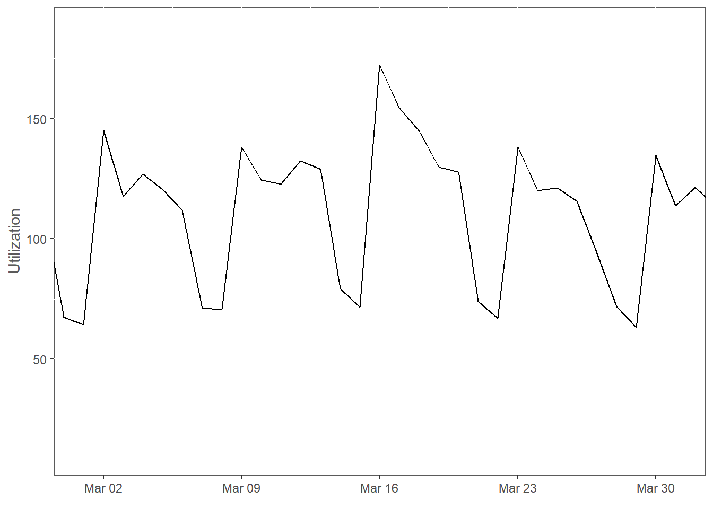

Chapter 1 Motivating GAMs
1.1 Linear Regression
We’ll start with good ol’ linear regression and build up to generalized additive models. The mathematical form of linear regression is
\[ y \sim \beta_0+\sum_{i=1}^n \beta_i x_i+ \epsilon \\ \epsilon \sim N(0,\sigma^2) \] In English, some response variable \(y\) is modeled as the sum of an intercept term \(\beta_0\) and \(n\) predictor variables \(x_1,...,x_n\) with random error \(\epsilon \sim N(0,\sigma^2)\).
1.2 Data
I will skip straight to a fully-processed dataset based on other tutorials I’ve given with this data. The main things I’m doing are converting the categorical variables to factors (they are ordered factors in the original data for some reason) and setting the reference level to the one that occurs the most frequently in the data. As you have learned or will learn on the Predictive Analytics exam, this is general best practice.
dat <- as.data.table(diamonds)
dat[
,
clarity := relevel(
factor(
clarity,
ordered = F
),
ref = 'SI1'
)
]
dat[
,
color := relevel(
factor(
color,
ordered = F
),
ref = 'G'
)
]
dat[
,
cut := relevel(
factor(
cut,
ordered = F
),
ref = 'Ideal'
)
]1.3 Model Fitting
We can fit a linear regression to our diamonds dataset as follows.
I leave out the depth and table variables because, although I’ve tried quite a bit, I don’t understand them and don’t trust their contributions to the model.
You’ll just have to trust me on this for now, but I’d love to have someone explain how to incorporate them into a model in a rigorous way.
m_lm <- lm(price ~ carat + cut + color + clarity, data = dat)The first thing to do with a model is to examine the estimated coefficients.
summary(m_lm)##
## Call:
## lm(formula = price ~ carat + cut + color + clarity, data = dat)
##
## Residuals:
## Min 1Q Median 3Q Max
## -16813.5 -680.4 -197.6 466.4 10394.9
##
## Coefficients:
## Estimate Std. Error t value Pr(>|t|)
## (Intercept) -3297.06 18.84 -175.049 <2e-16 ***
## carat 8886.13 12.03 738.437 <2e-16 ***
## cutFair -998.25 30.66 -32.563 <2e-16 ***
## cutGood -342.49 18.52 -18.489 <2e-16 ***
## cutVery Good -149.54 13.27 -11.273 <2e-16 ***
## cutPremium -128.86 12.89 -9.994 <2e-16 ***
## colorD 506.20 18.12 27.933 <2e-16 ***
## colorE 294.52 16.20 18.183 <2e-16 ***
## colorF 202.89 16.15 12.561 <2e-16 ***
## colorH -472.50 16.86 -28.029 <2e-16 ***
## colorI -934.10 19.36 -48.239 <2e-16 ***
## colorJ -1819.02 24.84 -73.227 <2e-16 ***
## clarityI1 -3573.69 44.60 -80.132 <2e-16 ***
## claritySI2 -947.74 16.00 -59.224 <2e-16 ***
## clarityVS2 644.14 14.64 44.006 <2e-16 ***
## clarityVS1 961.19 16.53 58.137 <2e-16 ***
## clarityVVS2 1393.51 19.55 71.262 <2e-16 ***
## clarityVVS1 1498.34 22.25 67.341 <2e-16 ***
## clarityIF 1845.96 29.86 61.827 <2e-16 ***
## ---
## Signif. codes: 0 '***' 0.001 '**' 0.01 '*' 0.05 '.' 0.1 ' ' 1
##
## Residual standard error: 1157 on 53921 degrees of freedom
## Multiple R-squared: 0.9159, Adjusted R-squared: 0.9159
## F-statistic: 3.264e+04 on 18 and 53921 DF, p-value: < 2.2e-16This readout gives us a ton of information.
The first thing I like to look at is the p-values for all of the terms we included in our model.
This can be found in the column labeled Pr(>|t|).
These are the probabilities that we would observe an effect of the size estimated by the model due to chance.
We want this probability to be below some critical value \(\alpha\), which is usually set to .05.
If the probability is above \(\alpha\), then we don’t have enough evidence to include that term in our model.
We call estimated coefficients with a p-value less than \(\alpha\) statistically significant.
The second thing I look at is the adjusted R-squared, or \(R^2_{adj}\). \(R^2\) is usually interpreted as the proportion of variance in the response variable that is explained by the model. Higher values are always better, but there is no overarching threshold that you should shoot for. Some fields of study, such as biology, psychology, and unfortunately for us, short-term actuarial science, are simply subject to very high variance, so \(R^2\) as low as .1 can be acceptable even for peer-reviewed studies. \(R^2_{adj}\) adds a penalty for each term in the model, since \(R^2\) always improves by at least a little whenever a term is added.
Even though we’ve learned a lot from this readout, and all of it sounds good, we are by no means done. The next thing I like to do is plot actuals vs. predicted to see if the relationships between variables estimated by the model are tracking those in the data.
preds <- cbind(dat, predicted = predict(m_lm))
ggplot(preds) +
geom_point(aes(price, predicted)) +
geom_abline(
slope = 1,
intercept = 0,
color = colors$Visualization$Strawberry
) +
scale_x_continuous(labels = dollar) +
scale_y_continuous(labels = dollar) +
labs(x = 'Actual', y = 'Predicted') +
mytheme
This plot shows us that our model may not be so great after all. The red line shows us what a perfect model with zero residual variance would look like. It’s clear that our model is significantly over-predicting the prices of very cheap and very expensive diamonds. Our coefficients may have passed the test for statistical significance, but it looks there’s more going on in the data than we were able to capture.
There is a lot more validation work to be done, but I am going to put that off until we get to GAMs because that is the model form we’re most interested in.
1.4 Generalized Linear Models
Generalized linear models (GLMs) were introduced in 1972 as a formal specification of a family of models that includes linear regression as well as many others. Compared to linear regression, GLMs have relaxed constraints on the assumed error distribution and add a link function to the model form. Mathematically, a GLM is:
- A random variable \(Y\) that is conditionally distributed according to a member of the linear exponential family of distributions;
- A linear predictor \(\eta = \sum_{i=0}^n{\beta_iX_i}\); and
- A link function \(g\) such that \(E(Y|X) = g^{-1}(\eta)\).
We don’t need to bother with the mathematics of the linear exponential family. It’s enough for us to note that it contains a distribution for basically any modeling problem:
- Bernoulli - The probability that an event will occur; e.g. a patient will develop sepsis
- Binomial/Negative Binomial - The expected number of occurrences out of \(N\) trials; e.g. the count of distinct medications a member will take in a year
- Poisson - The expected number of occurrences in a given amount of time/space; e.g. the number of patients visiting a doctor’s office in a day
- Normal - A numeric value on the real line
You can see a full list here.
Note that the last error assumption, when paired with the identity link function, is simply linear regression. You may also know the Bernoulli case as logistic regression, named for its canonical link function, the logistic function \(\frac{L}{1+e^{-k(x-x_0)}}\).
We will first take advantage of the GLM’s ability to add a link function. It’s basically always a good idea to use a log link when working with price data, if only because the range of possible predicted values is restricted to the positive reals - we almost never want to predict a negative price.
m_glm <- glm(
price ~ carat + cut + color + clarity,
family = gaussian(link = 'log'),
data = dat
)
summary(m_glm)##
## Call:
## glm(formula = price ~ carat + cut + color + clarity, family = gaussian(link = "log"),
## data = dat)
##
## Deviance Residuals:
## Min 1Q Median 3Q Max
## -75260 -1291 -695 695 12438
##
## Coefficients:
## Estimate Std. Error t value Pr(>|t|)
## (Intercept) 7.036821 0.005621 1251.79 <2e-16 ***
## carat 1.397089 0.002699 517.66 <2e-16 ***
## cutFair -0.237914 0.008208 -28.98 <2e-16 ***
## cutGood -0.079164 0.004953 -15.98 <2e-16 ***
## cutVery Good -0.003201 0.003478 -0.92 0.357
## cutPremium -0.041107 0.003208 -12.81 <2e-16 ***
## colorD 0.112976 0.005301 21.31 <2e-16 ***
## colorE 0.063442 0.004702 13.49 <2e-16 ***
## colorF 0.080921 0.004219 19.18 <2e-16 ***
## colorH -0.152879 0.004081 -37.46 <2e-16 ***
## colorI -0.305330 0.004384 -69.65 <2e-16 ***
## colorJ -0.582432 0.005708 -102.05 <2e-16 ***
## clarityI1 -2.340860 0.020895 -112.03 <2e-16 ***
## claritySI2 -0.294332 0.003840 -76.65 <2e-16 ***
## clarityVS2 0.133571 0.003718 35.93 <2e-16 ***
## clarityVS1 0.234327 0.004249 55.15 <2e-16 ***
## clarityVVS2 0.319816 0.005520 57.94 <2e-16 ***
## clarityVVS1 0.285559 0.007516 37.99 <2e-16 ***
## clarityIF 0.400077 0.009034 44.28 <2e-16 ***
## ---
## Signif. codes: 0 '***' 0.001 '**' 0.01 '*' 0.05 '.' 0.1 ' ' 1
##
## (Dispersion parameter for gaussian family taken to be 2513220)
##
## Null deviance: 8.5847e+11 on 53939 degrees of freedom
## Residual deviance: 1.3551e+11 on 53921 degrees of freedom
## AIC: 948013
##
## Number of Fisher Scoring iterations: 8# type argument must be specified for GLMs
preds <- cbind(dat, predicted = predict(m_glm, type = 'response'))
ggplot(preds) +
geom_point(aes(price, predicted)) +
geom_abline(
slope = 1,
intercept = 0,
color = colors$Visualization$Strawberry
) +
scale_x_continuous(labels = dollar) +
scale_y_continuous(labels = dollar) +
labs(x = 'Actual', y = 'Predicted') +
mytheme
The bulk of our predictions are now centered around the red line, but the problem of predictions being too high for more expensive diamonds is worse. In addition, there is a region of data points below the main region. This suggests that the model is missing some relationship in the data.
ggplot(preds) +
geom_point(
aes(
price,
predicted,
# I do this just to make the legend a little more readable
color = factor(
clarity,
levels = rev(
c('I1', 'SI2', 'SI1', 'VS2', 'VS1', 'VVS2', 'VVS1', 'IF')
)
)
)
) +
scale_discrete_optum('color') +
scale_x_continuous(labels = dollar) +
scale_y_continuous(labels = dollar) +
labs(x = 'Actual', y = 'Predicted', color = element_blank()) +
mytheme
This residual plot makes the cause of the grouping issue very clear: the price slope for diamonds of clarity IF looks to be quite different from the slopes of the rest of the clarity ratings. Based on the groupings visible in the above plot, we need to allow the price slope to vary by clarity. The other main issue is not as clear, but I will skip straight to it to save us time: the price-carat relationship also needs to be able to change slope. We can implement these changes with the below code.
m_glm2 <- glm(
price ~ poly(carat, 3)*clarity + cut + color,
data = dat,
family = gaussian(link = 'log')
)
summary(m_glm2)##
## Call:
## glm(formula = price ~ poly(carat, 3) * clarity + cut + color,
## family = gaussian(link = "log"), data = dat)
##
## Deviance Residuals:
## Min 1Q Median 3Q Max
## -10624.8 -200.5 -26.5 180.3 7096.0
##
## Coefficients:
## Estimate Std. Error t value Pr(>|t|)
## (Intercept) 7.768288 0.004583 1695.100 < 2e-16 ***
## poly(carat, 3)1 231.821770 0.913825 253.683 < 2e-16 ***
## poly(carat, 3)2 -54.434208 0.430228 -126.524 < 2e-16 ***
## poly(carat, 3)3 17.669019 0.659020 26.811 < 2e-16 ***
## clarityI1 -0.264844 0.020736 -12.772 < 2e-16 ***
## claritySI2 -0.068189 0.007285 -9.361 < 2e-16 ***
## clarityVS2 0.134356 0.005638 23.829 < 2e-16 ***
## clarityVS1 0.187955 0.006317 29.753 < 2e-16 ***
## clarityVVS2 0.291332 0.006866 42.433 < 2e-16 ***
## clarityVVS1 0.369897 0.007156 51.693 < 2e-16 ***
## clarityIF 0.469748 0.008872 52.946 < 2e-16 ***
## cutFair -0.166446 0.003241 -51.359 < 2e-16 ***
## cutGood -0.077725 0.002042 -38.054 < 2e-16 ***
## cutVery Good -0.034547 0.001440 -23.995 < 2e-16 ***
## cutPremium -0.049561 0.001314 -37.726 < 2e-16 ***
## colorD 0.174176 0.002176 80.044 < 2e-16 ***
## colorE 0.128012 0.001929 66.357 < 2e-16 ***
## colorF 0.090840 0.001746 52.032 < 2e-16 ***
## colorH -0.109804 0.001701 -64.550 < 2e-16 ***
## colorI -0.200778 0.001837 -109.303 < 2e-16 ***
## colorJ -0.348985 0.002333 -149.583 < 2e-16 ***
## poly(carat, 3)1:clarityI1 -68.202418 3.282812 -20.776 < 2e-16 ***
## poly(carat, 3)2:clarityI1 22.986484 1.265368 18.166 < 2e-16 ***
## poly(carat, 3)3:clarityI1 -11.706733 0.725728 -16.131 < 2e-16 ***
## poly(carat, 3)1:claritySI2 -25.448899 1.437627 -17.702 < 2e-16 ***
## poly(carat, 3)2:claritySI2 12.372250 0.705059 17.548 < 2e-16 ***
## poly(carat, 3)3:claritySI2 -14.280810 0.782883 -18.241 < 2e-16 ***
## poly(carat, 3)1:clarityVS2 1.870011 1.125183 1.662 0.096526 .
## poly(carat, 3)2:clarityVS2 -7.297582 0.575906 -12.671 < 2e-16 ***
## poly(carat, 3)3:clarityVS2 -1.254099 0.737984 -1.699 0.089257 .
## poly(carat, 3)1:clarityVS1 8.735755 1.319027 6.623 3.56e-11 ***
## poly(carat, 3)2:clarityVS1 -10.865925 0.647157 -16.790 < 2e-16 ***
## poly(carat, 3)3:clarityVS1 9.321429 1.069932 8.712 < 2e-16 ***
## poly(carat, 3)1:clarityVVS2 27.565527 1.790833 15.393 < 2e-16 ***
## poly(carat, 3)2:clarityVVS2 -4.731728 1.433310 -3.301 0.000963 ***
## poly(carat, 3)3:clarityVVS2 54.218689 2.263802 23.950 < 2e-16 ***
## poly(carat, 3)1:clarityVVS1 15.893363 1.679070 9.466 < 2e-16 ***
## poly(carat, 3)2:clarityVVS1 -16.881147 1.315091 -12.836 < 2e-16 ***
## poly(carat, 3)3:clarityVVS1 39.985118 2.186750 18.285 < 2e-16 ***
## poly(carat, 3)1:clarityIF 17.951187 1.938529 9.260 < 2e-16 ***
## poly(carat, 3)2:clarityIF -13.961946 1.311702 -10.644 < 2e-16 ***
## poly(carat, 3)3:clarityIF 67.110841 2.414828 27.791 < 2e-16 ***
## ---
## Signif. codes: 0 '***' 0.001 '**' 0.01 '*' 0.05 '.' 0.1 ' ' 1
##
## (Dispersion parameter for gaussian family taken to be 458620.2)
##
## Null deviance: 8.5847e+11 on 53939 degrees of freedom
## Residual deviance: 2.4719e+10 on 53898 degrees of freedom
## AIC: 856280
##
## Number of Fisher Scoring iterations: 5preds <- cbind(dat, predicted = predict(m_glm2, type = 'response'))
ggplot(preds) +
geom_point(aes(price, predicted)) +
geom_abline(
slope = 1,
intercept = 0,
color = colors$Visualization$Strawberry
) +
scale_x_continuous(labels = dollar) +
scale_y_continuous(labels = dollar) +
labs(x = 'Actual', y = 'Predicted') +
mytheme
This now looks good enough to get on with. We can visualize our fancy new price slopes in the following chart.
# CJ stands for 'Cross Join', and creates a data.table that is the cartesian product of all of the input vectors
pdat <- CJ(
# we need to apply the link function to any numeric variables
carat = log(seq(from = .01, to = 5.01, by = .01)),
clarity = factor(
levels(dat$clarity),
levels = c('IF', 'VVS1', 'VVS2', 'VS1', 'VS2', 'SI1', 'SI2', 'I1')
),
cut = factor('Ideal', levels = levels(dat$cut)),
color = factor('G', levels = levels(dat$color))
)
pdat[
# setting type = 'response' applies the inverse link function to the linear predictor for us
,
pred := predict(m_glm2, newdata = pdat, type = 'response')
]
ggplot(pdat, aes(x = exp(carat), group = clarity, color = clarity)) +
geom_line(aes(y = pred)) +
scale_discrete_optum(aesthetics = 'color') +
scale_y_continuous(labels = dollar) +
labs(
title = 'Visualization of Price Slopes',
x = 'Carat',
y = 'Price',
color = 'Clarity'
) +
mytheme1.5 Generalized Additive Models
Generalized Additive Models (GAMs) were introduced in the 90s by Simon Wood as an extension of GLMs that incorporate a form of functional regression.
They have all of the same characteristics of GLMs in addition to the ability to model functional, not just linear, relationships between predictor variables and the response, as well as an expanded field of error distributions, most notably for actuarial work the Tweedie and Negative Binomial.
Functional relationships are modeled by GAMs using various types of splines, which are piecewise functions that are used to interpolate a continuously-differentiable curve between a collection of points.
The linear predictor for a GAM, therefore, looks like this:
\[\eta = \sum_{i=0}^n\sum_{j=0}^m\beta_{ij}f_j(X_i)\]
With the added dimension \(j\) denoting the basis dimension, or each “piece” of the piecewise spline \(f_j(X_i)\).
This sounds a lot scarier than it is; it should become clear how splines work in GAMs once we fit one to our diamonds dataset.
GAMs are fit a lot like GLMs.
The function to use is called gam(), and it takes the same arguments formula, data, and family as glm().
You specify a functional term by wrapping it in s() or one of the other smooth constructors offered in the mgcv package.
Here, I am using the ti() (short for tensor interaction) constructor because this is the recommended way to create interaction terms in the context of GAMs.
I also parallelize model fitting, because otherwise fitting takes hours on my 32G work laptop (!).
The bam() function is just short for big gam and includes a new argument, cluster, which is a parallel computing cluster created using the parallel package.
It is recommended to fit GAMs in parallel if the number of rows in your training dataset is five figures or more.
cluster <- makePSOCKcluster(detectCores())
m_gam <- bam(
price ~ ti(carat) + clarity + ti(carat, by = clarity) + cut + color,
data = dat,
family = gaussian(link = 'log'),
cluster = cluster
)
# you must always stop the cluster you create
stopCluster(cluster)
summary(m_gam)##
## Family: gaussian
## Link function: log
##
## Formula:
## price ~ ti(carat) + clarity + ti(carat, by = clarity) + cut +
## color
##
## Parametric coefficients:
## Estimate Std. Error t value Pr(>|t|)
## (Intercept) 7.709623 0.005248 1468.977 <2e-16 ***
## clarityI1 -0.469449 0.051876 -9.049 <2e-16 ***
## claritySI2 -0.148794 0.010080 -14.762 <2e-16 ***
## clarityVS2 0.147028 0.006516 22.563 <2e-16 ***
## clarityVS1 0.213806 0.007026 30.430 <2e-16 ***
## clarityVVS2 0.341344 0.007509 45.460 <2e-16 ***
## clarityVVS1 0.417397 0.007547 55.308 <2e-16 ***
## clarityIF 0.514192 0.009151 56.189 <2e-16 ***
## cutFair -0.169132 0.003161 -53.510 <2e-16 ***
## cutGood -0.080538 0.001996 -40.359 <2e-16 ***
## cutVery Good -0.036635 0.001407 -26.043 <2e-16 ***
## cutPremium -0.049751 0.001282 -38.805 <2e-16 ***
## colorD 0.176630 0.002124 83.155 <2e-16 ***
## colorE 0.130101 0.001883 69.087 <2e-16 ***
## colorF 0.091305 0.001704 53.578 <2e-16 ***
## colorH -0.111324 0.001661 -67.014 <2e-16 ***
## colorI -0.204098 0.001800 -113.366 <2e-16 ***
## colorJ -0.349960 0.002283 -153.310 <2e-16 ***
## ---
## Signif. codes: 0 '***' 0.001 '**' 0.01 '*' 0.05 '.' 0.1 ' ' 1
##
## Approximate significance of smooth terms:
## edf Ref.df F p-value
## ti(carat) 3.9969 4.000 6450.26 < 2e-16 ***
## ti(carat):claritySI1 3.9573 3.999 61.37 < 2e-16 ***
## ti(carat):clarityI1 3.7512 3.944 117.79 < 2e-16 ***
## ti(carat):claritySI2 3.9663 3.999 172.61 < 2e-16 ***
## ti(carat):clarityVS2 0.9998 1.001 11.51 0.000692 ***
## ti(carat):clarityVS1 3.9317 3.997 21.21 < 2e-16 ***
## ti(carat):clarityVVS2 3.8454 3.977 99.29 < 2e-16 ***
## ti(carat):clarityVVS1 3.8206 3.971 82.44 < 2e-16 ***
## ti(carat):clarityIF 2.9045 2.991 209.77 < 2e-16 ***
## ---
## Signif. codes: 0 '***' 0.001 '**' 0.01 '*' 0.05 '.' 0.1 ' ' 1
##
## Rank: 53/54
## R-sq.(adj) = 0.973 Deviance explained = 97.3%
## fREML = 4.2696e+05 Scale est. = 4.3652e+05 n = 53940Let’s compare these price slopes to those from our original GLM fit.
pdat[
,
`:=`(
gam = predict(m_gam, newdata = pdat, type = 'response'),
glm = pred
)
]
ggplot(pdat, aes(x = exp(carat), group = clarity, color = clarity)) +
geom_line(aes(y = glm), linetype = 'dashed') +
geom_line(aes(y = gam)) +
scale_discrete_optum(aesthetics = 'color') +
scale_y_continuous(labels = dollar) +
labs(
title = 'Visualization of Price Slopes',
x = 'Carat',
y = 'Price',
color = 'Clarity'
) +
mythemeHere, we can see that the polynomial relationship between carat and price we modeled with a GLM is picked up automatically by the GAM.